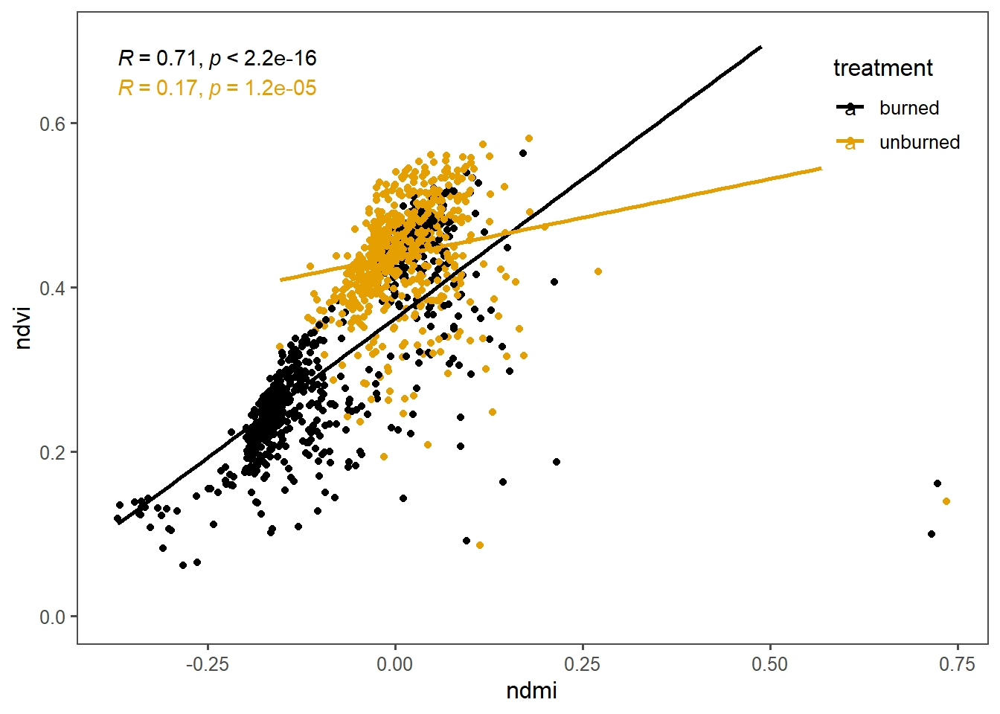
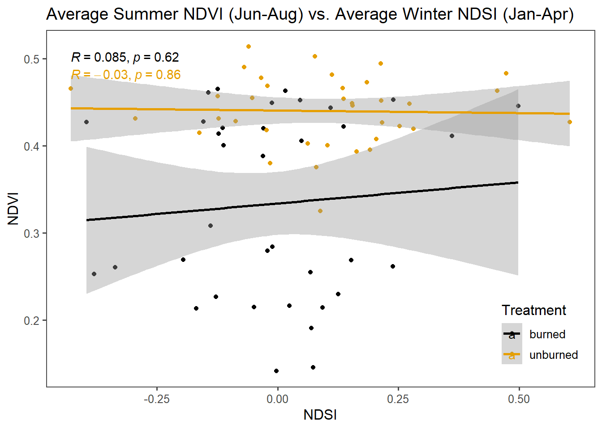
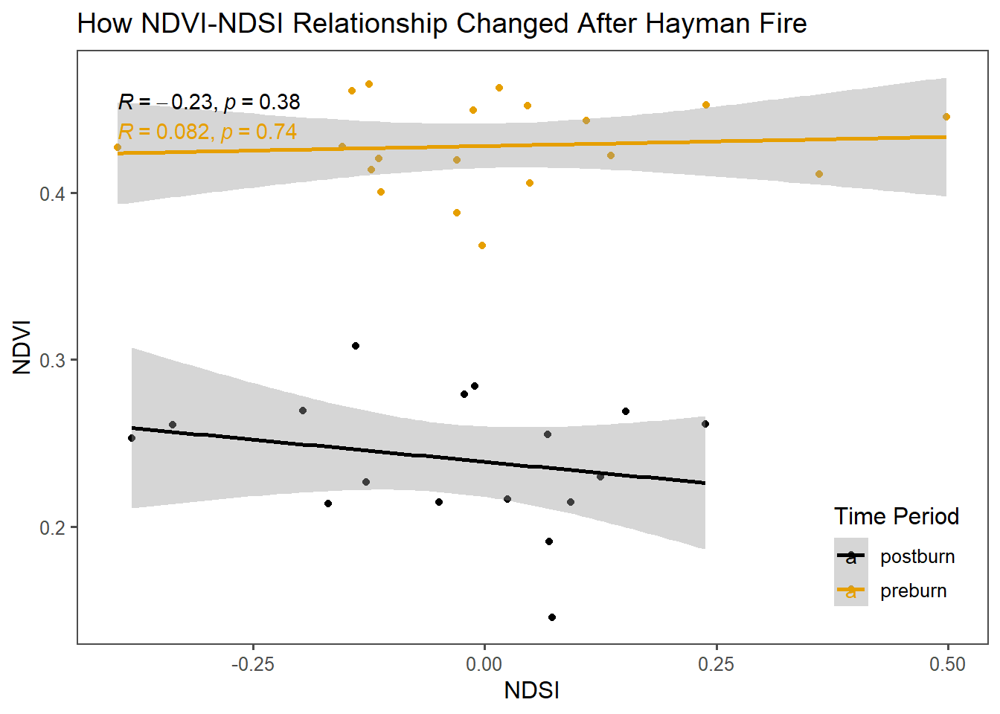
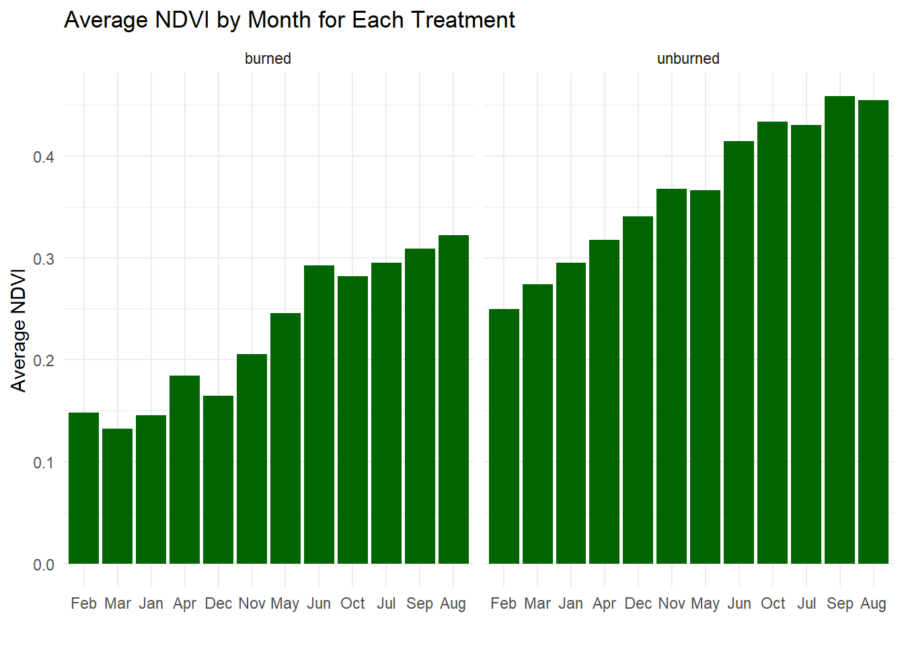
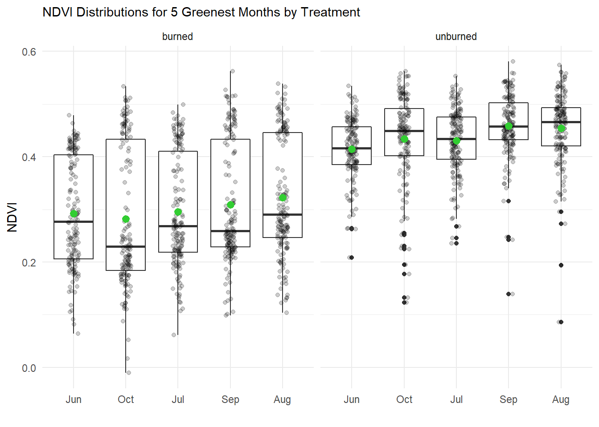
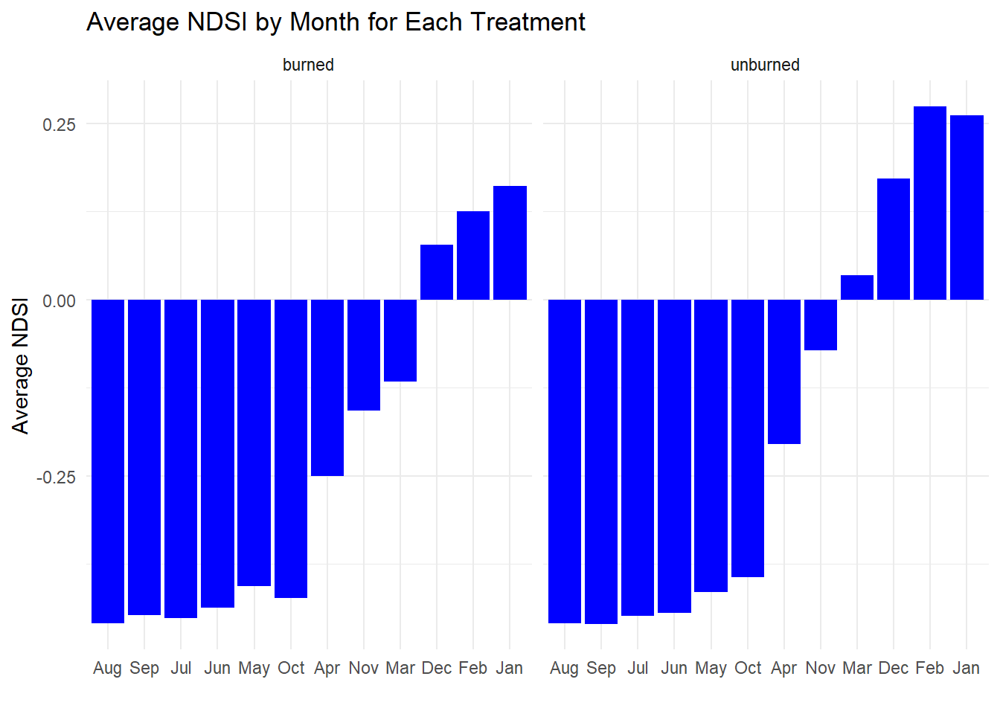
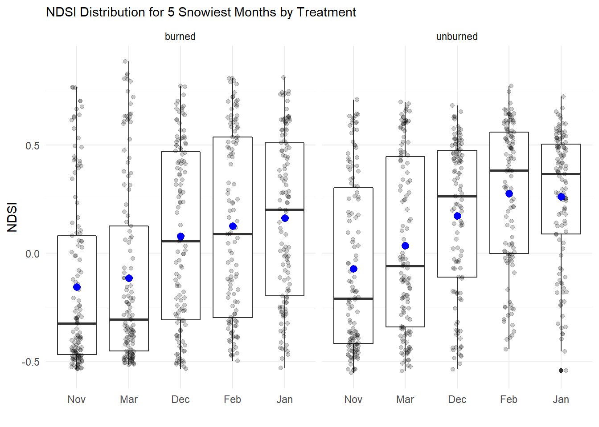

Chapter 3 Hayman Fire Recovery
Assignment 2: Now that we have learned how to munge (manipulate) data and plot it, we will work on using these skills in new ways
3.1 Reading In and Preparing Fire Data
####-----Reading in Data and Stacking it ----- ####
#Reading in files
files <- list.files('data_fire',full.names=T)
#Read in individual data files
ndmi <- read_csv(files[1]) %>%
rename(burned=2,unburned=3) %>%
mutate(data='ndmi')
ndsi <- read_csv(files[2]) %>%
rename(burned=2,unburned=3) %>%
mutate(data='ndsi')
ndvi <- read_csv(files[3])%>%
rename(burned=2,unburned=3) %>%
mutate(data='ndvi')
# Stack as a tidy dataset
full_long <- rbind(ndvi,ndmi,ndsi) %>%
gather(key='treatment',value='veg_index',-DateTime,-data) %>%
filter(!is.na(veg_index))3.2 The Assignment
3.2.1 Question 1)
What is the correlation between NDVI and NDMI? - here I want you to convert the full_long dataset in to a wide dataset using the function “spread” and then make a plot that shows the correlation s a function of if the site was burned or not (x axis should be ndmi) You should exclude winter months and focus on summer months
# preparing ndvi/ndmi/ndsi dataset for plotting
full_wide <- spread(data=full_long,key='data',value='veg_index') %>%
filter_if(is.numeric,all_vars(!is.na(.))) %>%
mutate(month = month(DateTime),
year = year(DateTime))
summer_only <- filter(full_wide,month %in% c(6,7,8,9))
# plotting the data to exmaine the NDVI vs NDMI
ggplot(summer_only,aes(x=ndmi,y=ndvi,color=treatment)) +
geom_point() +
geom_smooth(method = "lm", se = FALSE)+
stat_cor()+
ylim(0, 0.7)+
theme_few() +
scale_color_colorblind() +
theme(legend.position=c(0.9,0.85))
As can be seen in the above plot, an increase in NDMI is generally associated with an increase in NDVI. While this relationship is apparent for both the unburned and burned treatments, it is more clearly seen in the data from the burned treatment. The R value for the burned treatment (R = 0.71) is greater than that of the unburned treatment (R = 0.17).
3.2.2 Question 2
- What is the correlation between average NDSI (normalized snow index) for January - April and average NDVI for June-August? In other words, does the previous year’s snow cover influence vegetation growth for the following summer?
For this question, the student showed a way the data could be reorganized without using group_by and instead simply using gather and spread
###getting annual averages for NDSI by year for unburned and burned
ndsi2 <- read_csv(files[2]) %>%
rename(burned=2,unburned=3) %>%
mutate(data='ndsi', month = month(DateTime))%>%
filter(month %in% c(1,2,3,4))
ndsi2_burn <- select(ndsi2, 1:2)%>%
mutate(ndsi_burn = 'ndsi_burn', year = year(DateTime))%>%
filter(!is.na(burned))
ndsi2_burn_wide <- spread(ndsi2_burn,key = 'year', value = 'burned')
ndsi2burnAve <- summarise_if(ndsi2_burn_wide,is.numeric,mean, na.rm = TRUE)%>%
mutate(trt = 'NDSI_burnedAve')%>%
relocate(trt)
ndsi2_unburn <- select(ndsi2, 1,3)%>%
mutate(ndsi_unburn = 'ndsi_unburn', year = year(DateTime))%>%
filter(!is.na(unburned))
ndsi2_unburn_wide <- spread(ndsi2_unburn,key = 'year', value = 'unburned')
ndsi2unburnAve <- summarise_if(ndsi2_unburn_wide,is.numeric,mean, na.rm = TRUE)%>%
mutate(trt = 'NDSI_unburnedAve')%>%
relocate(trt)###getting annual averages for NDVI by year for unburned and burned
ndvi2 <- read_csv(files[3])%>%
rename(burned=2,unburned=3) %>%
mutate(data='ndvi', month = month(DateTime))%>%
filter(month %in% c(6,7,8))
ndvi2_burn <- select(ndvi2, 1:2)%>%
mutate(ndvi_burn = 'ndvi_burn', year = year(DateTime))%>%
filter(!is.na(burned))
ndvi2_burn_wide <- spread(ndvi2_burn,key = 'year', value = 'burned')
ndvi2burnAve <- summarise_if(ndvi2_burn_wide,is.numeric,mean, na.rm = TRUE)%>%
mutate(trt= 'NDVI_burnedAve')%>%
relocate(trt)
ndvi2_unburn <- select(ndvi2, 1,3)%>%
mutate(ndvi_unburn = 'ndvi_unburn', year = year(DateTime))%>%
filter(!is.na(unburned))
ndvi2_unburn_wide <- spread(ndvi2_unburn,key = 'year', value = 'unburned')
ndvi2unburnAve <- summarise_if(ndvi2_unburn_wide,is.numeric,mean, na.rm = TRUE)%>%
mutate(trt = 'NDVI_unburnedAve')%>%
relocate(trt)## reorganizing data for in preparation for plotting
bind <- rbind(ndsi2burnAve,ndsi2unburnAve,ndvi2burnAve,ndvi2unburnAve)
bindlong <- gather(bind, key = 'year', value = 'index', -trt)
trtspread <- spread(bindlong, key = 'trt', value = 'index')
NDSI2 <- select(trtspread, 1:3)%>%
rename(burned = 2, unburned = 3)%>%
mutate(trt = 'NDSI2')%>%
gather(key = 'burn_stat', value = 'index', -year,-trt)
NDVI2 <- select(trtspread,1,4,5)%>%
rename(burned =2, unburned = 3)%>%
mutate(trt = 'NDVI2')%>%
gather(key = 'burn_stat', value = 'index', -year,-trt)
bind_again <- rbind(NDSI2, NDVI2)
lastspread <- spread(bind_again, key = 'trt', value = 'index')## plotting the data
ggplot(lastspread,aes(x=NDSI2,y=NDVI2,color=burn_stat)) +
geom_point() +
geom_smooth(method = lm) +
stat_cor() +
theme_few() +
scale_color_colorblind(name= "Treatment") +
theme(legend.position=c(0.9,0.15)) +
labs(x = "NDSI", y = "NDVI", title = "Average Summer NDVI (Jun-Aug) vs. Average Winter NDSI (Jan-Apr)") 
Based on the above plot, there does not appear to be a strong relationship between snowfall over the winter and vegetation growth the following summer, especially for the unburned treatment. Based on the above plot alone, we might at first conclude that any association between an increase in winter snowfall and an increase in vegetation is higher for the burned treatment. However, this would likely be a mistake, as this data contains both pre-burn and post-burn data, and the average NDVI values dramatically dropped after the burn. That drop can be seen in the above data, with point above the burned regression line likely representing pre-burn, and those below likely representing post-burn. Without that drop in NDVI due to the burn treatment, or taking each treatment separately, we would likely see that the burned plot region has a similarly low, even negative, R value as the unburned plot. We will examine this more closely in the following figure.
3.2.3 Q3
How is the snow effect from question 2 different between pre- and post-burn and burned and unburned?
Student’s interpretation of this question: For the plot that received the burn treatment, how does the snow effect vary from pre-burn to post-burn. Further, how does this variation compare to the effect seen between the burned and unburned plots in the question 2 analysis.
## Reading, Filtering, Splitting Burned Plot Data into pre-burn and post-burn
ndvi3_preburn <- read_csv(files[3])%>%
select(1,2)%>%
rename(value =2)%>%
mutate(month = month(DateTime), year = year(DateTime))%>%
filter(DateTime >= as.Date("1984-01-01"), DateTime <= as.Date("2002-06-07"), month %in% c(6,7,8), !is.na(value))%>%
group_by(year)%>%
summarise(avg = mean(value))%>%
mutate(data_type = "NDVI", time_period = "preburn")
ndvi3_postburn <- read_csv(files[3])%>%
select(1,2)%>%
rename(value =2)%>%
mutate(month = month(DateTime), year = year(DateTime))%>%
filter(DateTime >= as.Date("2002-07-19"), month %in% c(6,7,8), !is.na(value))%>%
group_by(year)%>%
summarise(avg = mean(value))%>%
mutate(data_type = "NDVI", time_period = "postburn")
ndsi3_preburn <- read_csv(files[2])%>%
select(1,2)%>%
rename(value =2)%>%
mutate(month = month(DateTime), year = year(DateTime))%>%
filter(DateTime >= as.Date("1984-01-01"), DateTime <= as.Date("2002-06-07"), month %in% c(1,2,3,4), !is.na(value))%>%
group_by(year)%>%
summarise(avg = mean(value))%>%
mutate(data_type = "NDSI", time_period = "preburn")
ndsi3_postburn <- read_csv(files[2])%>%
select(1,2)%>%
rename(value =2)%>%
mutate(month = month(DateTime), year = year(DateTime))%>%
filter(DateTime >= as.Date("2002-07-19"), month %in% c(1,2,3,4), !is.na(value))%>%
group_by(year)%>%
summarise(avg = mean(value))%>%
mutate(data_type = "NDSI", time_period = "postburn")## Stacking and then Spreading Data for plotting
preNpost <- rbind(ndvi3_preburn, ndvi3_postburn, ndsi3_preburn, ndsi3_postburn)%>%
spread(key = 'data_type', value = 'avg')%>%
filter_if(is.numeric,all_vars(!is.na(.)))## plotting the data
ggplot(preNpost, aes(x = NDSI, y = NDVI, color = time_period)) +
geom_point()+
geom_smooth(method = lm)+
stat_cor()+
theme_few()+
scale_color_colorblind(name= "Time Period")+
theme(legend.position = c(0.9, 0.15)) +
labs(title = "How NDVI-NDSI Relationship Changed After Hayman Fire")
In analyzing the relationship between average winter snowfall and average summer vegetation growth explicitly for the burned plot, we do not see a strong association. Trendlines for both pre-fire and post-fire data show have slopes near zero. However, we are able to see a clear drop in average summer NDVI values after the fire. While the association between NDVI and NDSI is most likely slightly positive for the pre-burn time period, the relationship looks to most likely have become slightly negative after the fire.
3.2.4 Question 4
What month is the greenest month on average?
## preparing the data
ndvi4 <- read_csv(files[3])%>%
rename(burned = 2, unburned = 3)%>%
gather(key = 'treatment', value = 'veg_index', -DateTime)%>%
filter(!is.na(veg_index))%>%
mutate(month = month(DateTime))%>%
mutate(Month = month.abb[month])
ndviBAR4b <- ndvi4 %>%
filter(treatment == "burned")%>%
group_by(month)%>%
summarise(AVG = mean(veg_index))%>%
mutate(Month = month.abb[month], treatment = 'burned')
ndviBAR4u <- ndvi4 %>%
filter(treatment == "unburned")%>%
group_by(month)%>%
summarise(AVG = mean(veg_index))%>%
mutate(Month = month.abb[month], treatment = 'unburned')
ndviBAR4 <- rbind(ndviBAR4b, ndviBAR4u)
topNDVI4 <- ndvi4 %>%
filter(month %in% c(6,7,8,9,10))## plotting the data
ggplot(ndviBAR4, aes(x=reorder(Month,AVG), y=AVG)) +
geom_bar(stat="identity", fill="darkgreen")+
theme_minimal()+
facet_wrap(~treatment)+
labs(x = "", y = "Average NDVI", title = "Average NDVI by Month for Each Treatment")
ggplot(topNDVI4, aes(x = reorder(Month,veg_index), y= veg_index)) +
geom_boxplot() +
geom_jitter(width = 0.1, alpha = 0.2)+
stat_summary(fun.y = "mean", color = "limegreen") +
scale_fill_viridis(discrete = TRUE, alpha=0.6, option="A") +
theme_minimal() +
theme(
legend.position="none",
plot.title = element_text(size=11)
) +
ggtitle("NDVI Distributions for 5 Greenest Months by Treatment") +
ylab("NDVI") +
xlab("")+
facet_wrap(~treatment)
The above bar chart shows how average monthly NDVI values differ between the burned and unburned plots. September and August are on average the two greenest months for both plots, but September is slightly greener on the unburned plot, while August is slightly greener on the burned plot.
Taking a closer a look at the distribution of the data, which can be seen in the above boxplots, a clear break can be seen in the burned plot’s data. This break most certainly corresponds to the drop in NDVI that occurred after the fire. Therefore, to properly analyze which month is greenest in the burned plot, it is best to analyze its greenest after the fire separately from greenness before the fire.
3.2.5 Question 5)
What month is the snowiest on average?
## preparing the data
ndsi5 <- read_csv(files[2])%>%
rename(burned = 2, unburned = 3)%>%
gather(key = 'treatment', value = 'snow_index', -DateTime)%>%
filter(!is.na(snow_index))%>%
mutate(month = month(DateTime))%>%
mutate(Month = month.abb[month])
ndsiBAR5b <- ndsi5 %>%
filter(treatment == "burned")%>%
group_by(month)%>%
summarise(AVG = mean(snow_index))%>%
mutate(Month = month.abb[month], treatment = 'burned')
ndsiBAR5u <- ndsi5 %>%
filter(treatment == "unburned")%>%
group_by(month)%>%
summarise(AVG = mean(snow_index))%>%
mutate(Month = month.abb[month], treatment = 'unburned')
ndsiBAR5 <- rbind(ndsiBAR5b, ndsiBAR5u)
topNDSI5 <- ndsi5 %>%
filter(month %in% c(1,2,3,11,12))## plotting the data
ggplot(ndsiBAR5, aes(x=reorder(Month,AVG), y=AVG)) +
geom_bar(stat="identity", fill="blue")+
theme_minimal()+
facet_wrap(~treatment)+
labs(x = "", y = "Average NDSI", title = "Average NDSI by Month for Each Treatment")
ggplot(topNDSI5, aes(x = reorder(Month,snow_index), y= snow_index)) +
geom_boxplot() +
geom_jitter(width = 0.1, alpha = 0.2)+
stat_summary(fun.y = "mean", color = "blue") +
scale_fill_viridis(discrete = TRUE, alpha=0.6, option="A") +
theme_minimal() +
theme(
legend.position="none",
plot.title = element_text(size=11)
) +
ggtitle("NDSI Distribution for 5 Snowiest Months by Treatment") +
ylab("NDSI") +
xlab("")+
facet_wrap(~treatment)
After organizing the data for each region according to month and plotting monthly NDSI distributions and mean values in the above boxplots, we can see that the snowiest months differ between regions. January is the snowiest month on average in the burned region, whereas February is the snowiest month on average in the unburned region.
Again, taking a closer a look at the distribution of the data, which can be seen in the above boxplots, a clear break can be seen in the burned plot’s data, especially for the snowiest months of December, January, and February. This break likely also corresponds to the vegetation loss and ecosystem change that occurred after the fire. Therefore, to properly analyze which month is snowiest in the burned plot, it is best to analyze its snow index after the fire separately from before the fire.